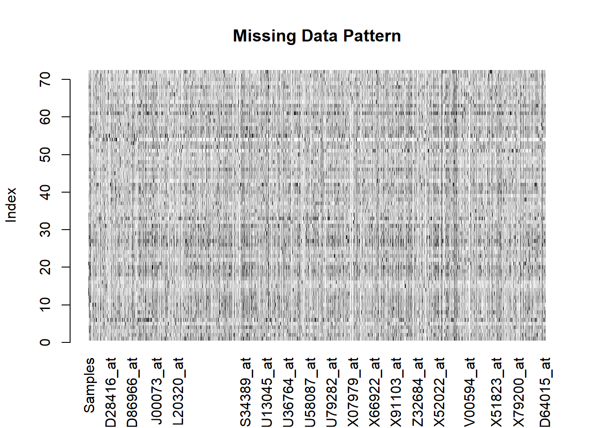
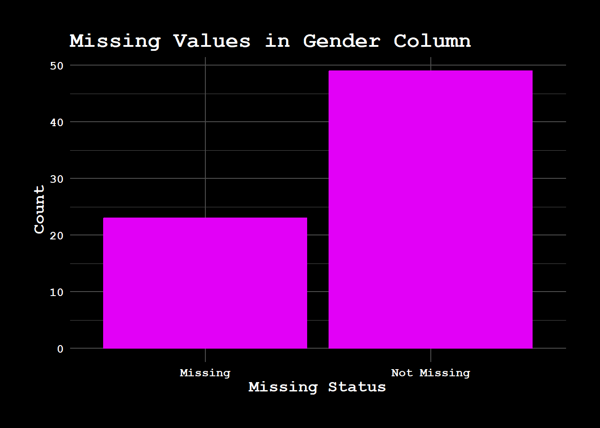

For this project, we are using the Golub leukemia dataset, which is a popular dataset used in bioinformatics for classification tasks. This dataset consists of gene expression data from 72 leukemia samples, which are used to classify the samples into three different leukemia types.
Source: OpenIntro. The dataset can be accessed here.
Description: The dataset contains gene expression data for 72 leukemia samples. The samples are collected from both bone marrow (BM) and peripheral blood (PB), and are labeled as either Acute Lymphoblastic Leukemia (ALL) or Acute Myeloid Leukemia (AML). The dataset also includes various demographic information about the samples.
Variables:
Samples: A numeric vector indicating the sample number for each observation.
BM.PB: A factor variable with two levels — BM (bone marrow) and PB (peripheral blood), which identifies the source of the sample.
Gender: A factor variable with levels F (female) and M (male), identifying the gender of the individual from whom the sample was taken.
Source: A factor variable with levels CALGB, CCG, DFCI, and St-Jude, representing the different hospitals from which the samples originated.
tissue.mf: A factor variable with combinations of tissue type (BM or PB) and gender (f or m), representing the interaction between source and gender.
Cancer Type: A factor variable with three levels: allB (Acute Lymphoblastic Leukemia B-cell type), allT (Acute Lymphoblastic Leukemia T-cell type), and aml (Acute Myeloblastic Leukemia).
Gene Expression Data: In addition to these categorical variables, the dataset contains gene expression measurements for 7,129 gene probes, which represent the expression levels of genes for each sample.
Format:
The dataset is provided as a data frame where rows represent individual samples (72 samples) and columns represent gene expression data (7,129 columns for genes), as well as the categorical variables mentioned above.
The data frame has 72 rows and 7,129 columns, with each column corresponding to the gene expression level for a particular gene.
Collection: The data was collected using microarray technology, which allows researchers to measure the expression of thousands of genes simultaneously. The samples are derived from leukemia patients and classified into one of the three categories based on the type of leukemia.
Frequency of Updates: The dataset is static, meaning it is not updated frequently. The original data was collected many years ago and has become a standard benchmark dataset used for classification tasks in bioinformatics.
Importing the Data: The dataset is available in CSV format, which can be easily loaded into R or Python. Here’s an example of how to load it in R:
Code
# R code to load the datasetlibrary(readr)library(ggplot2)library(cyberpunk)library(dplyr)
Attaching package: 'dplyr'
The following objects are masked from 'package:stats':
filter, lag
The following objects are masked from 'package:base':
intersect, setdiff, setequal, union
Code
golub_data <-read_csv("golub.csv")
Rows: 72 Columns: 7135
── Column specification ────────────────────────────────────────────────────────
Delimiter: ","
chr (5): BM.PB, Gender, Source, tissue.mf, cancer
dbl (7130): Samples, AFFX-BioB-5_at, AFFX-BioB-M_at, AFFX-BioB-3_at, AFFX-Bi...
ℹ Use `spec()` to retrieve the full column specification for this data.
ℹ Specify the column types or set `show_col_types = FALSE` to quiet this message.
2.2 Missing Value Analysis
Before conducting any analysis, it’s important to check for missing values in the dataset. Since this dataset is well-structured, we expect there to be no missing values for the categorical variables. However, we will verify this by performing a quick check for missing values in the gene expression data.
2.2.1 Missing Value Summary
We first count the number of columns with missing values in the dataset:
Code
# Checking for missing values in the datasetmissing_summary <-colSums(is.na(golub_data))# Find columns that have missing valuesmissing_columns <- missing_summary[missing_summary >0]# Print the number of columns with missing valuescat("Number of columns with missing values: ", length(missing_columns), "\n")
Number of columns with missing values: 1
Code
# If there are missing values, print the detailsif(length(missing_columns) >0) {cat("\nColumns with missing values:\n")print(missing_columns)}
Columns with missing values:
Gender
23
2.2.2 Handling Missing Data
Since the Gender column has only 23 missing values out of a total of 72 observations, this represents a small fraction of the dataset (about 32% of the total observations). There are a few possible approaches to handle this:
Remove rows with missing values (if the missingness is random and not too significant).
Impute missing values based on the distribution of the Gender column, either by mode imputation (i.e., replacing missing values with the most common value) or by more sophisticated imputation methods.
2.2.3 Visualization of Missing Data
To inspect the missing values specifically in the Gender column of the golub_data dataset, we performed an analysis by first extracting the Gender data and checking for missing values. The number of missing values was then compared to the number of non-missing values, and this comparison was visualized in a bar chart.
The bar chart below shows two categories: “Missing” and “Not Missing”. This visualization provides an overview of how much data is missing in the Gender column and how it relates to the total number of observations.
Code
# Extract the Gender column (assuming 'golub_data' is your dataset)gender_data <- golub_data$Gender# Check for missing values in the Gender columnmissing_gender <-is.na(gender_data)# Create a summary of missing valuesmissing_count <-sum(missing_gender)total_count <-length(gender_data)# Plot missing values for Genderggplot(data.frame(Missing =c(missing_count, total_count - missing_count), Category =c("Missing", "Not Missing")), aes(x = Category, y = Missing)) +geom_bar(stat ="identity") +theme_cpunk() +labs(title ="Missing Values in Gender Column", x ="Missing Status", y ="Count")

As shown in the plot, about one-third of the entries in the Gender column are missing, and the rest are filled in. This distribution of missing values can impact downstream analysis and may require appropriate handling techniques such as imputation.
To understand how the expression levels of the first gene vary across different genders, we extracted the data from the 7th column, which corresponds to the expression levels of the first gene. We then plotted a scatter plot using ggplot2, grouping the samples by gender (Male, Female, or Missing) to observe any trends.
2.2.3.1 Method:
Extracting the Gene Expression Data: We first dynamically extracted the name of the column corresponding to the first gene expression using the colnames() function. This allowed us to reference the specific gene expression data in subsequent steps.
Plotting the Data: Using ggplot2, we plotted the gene expression levels against gender. The geom_jitter() function was used to avoid overplotting of points by adding small random noise along the x-axis (gender). This technique is particularly useful when there are overlapping data points, which is common in datasets with repeated values.
Plot Description: The scatter plot helps us visualize the spread of the gene expression levels for the first gene across the different gender groups. This plot provides an initial understanding of whether gender might influence the expression level of this gene, as well as showing any potential outliers or trends.
Code
first_gene_colname <-colnames(golub_data)[7]# Plot using the extracted column nameggplot(golub_data, aes(x = Gender, y = .data[[first_gene_colname]])) +geom_jitter(width =0.1, height =0) +# Add jitter to avoid overlapping pointstheme_cpunk() +labs(title =paste("Scatter Plot of", first_gene_colname, "by Gender"), x ="Gender", y =paste("Expression of", first_gene_colname))

2.2.3.2 Observations:
The scatter plot does not show any significant trend in the distribution of the gender variable. The data points for males, females, and missing values overlap substantially, suggesting that gender does not have a meaningful effect on the expression of the first gene.
Given the lack of any distinct pattern in the scatter plot, we can conclude that the gender column does not provide valuable information in this context and can be ignored for further analyses.